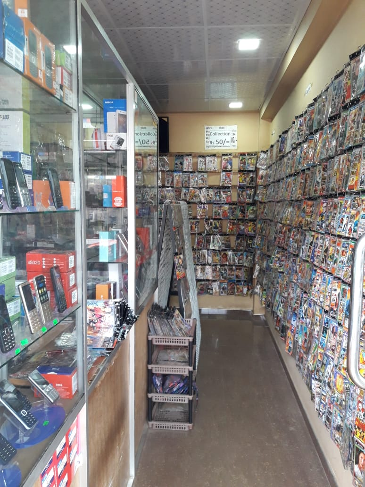
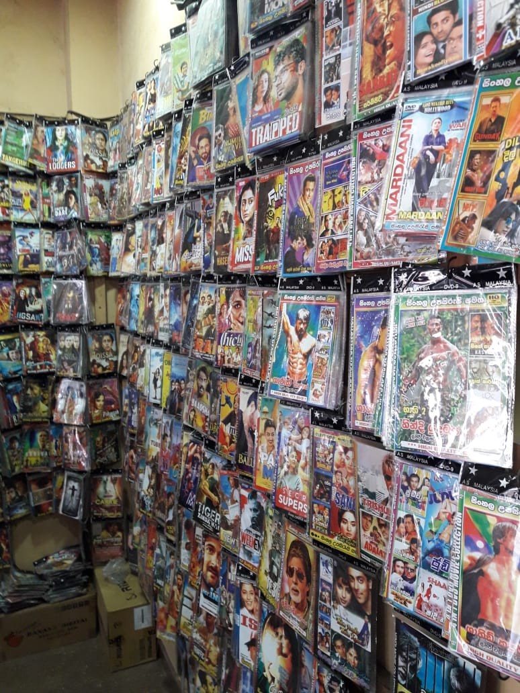
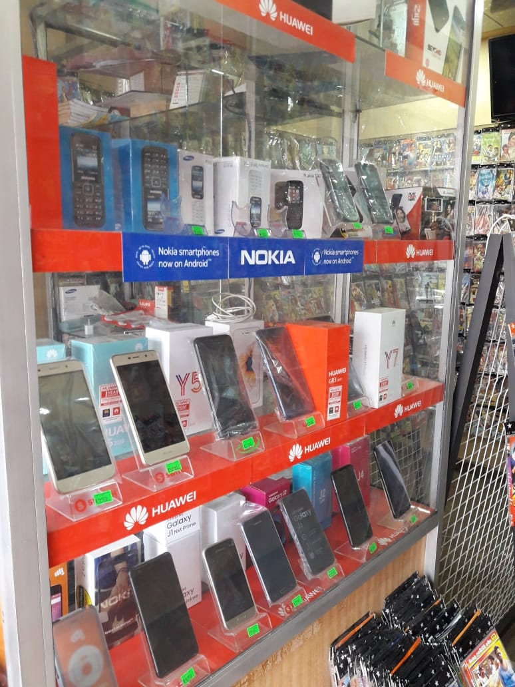
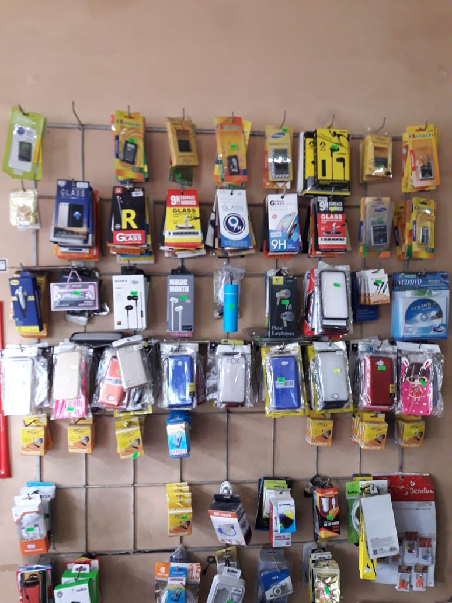
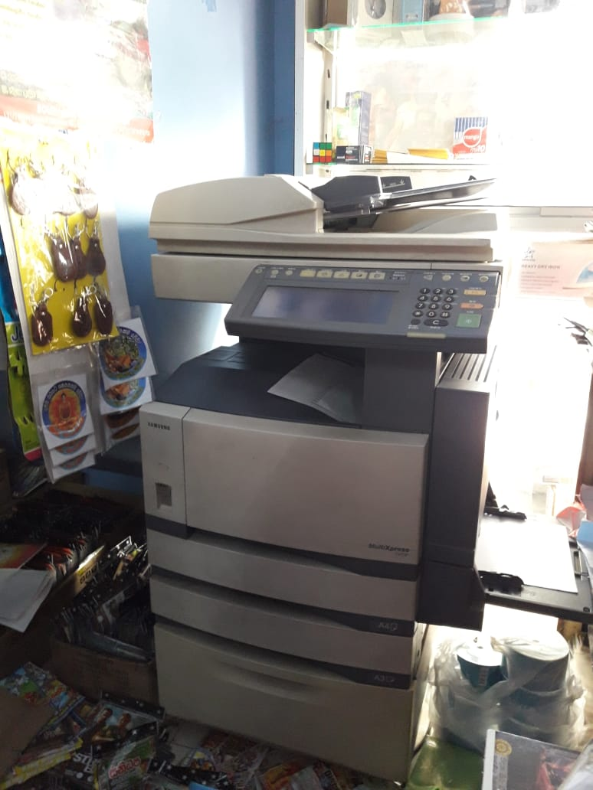

Sri lankan owned and operated company specializing in the sale of popular brand name mobile phones,accessories,games, and movies
Based in Kadawatha, NS communication & cellular center is taking ecommerce sales and support to another level, incorporating everything you need as a customer to make the right decisions when purchasing.
The wide range of products allows ns communication to provide a one-stop solution for all mobile phones & communication products and peripherals.
All of our products are sourced from reputable vendors including Samsung, Huawei,Oppo and many others.
NS communication stocks and distributes a wide range of networking equipment, mobile phones, accessories, games and movies.
With over 200000 products currently in our database (and with our product range literally growing and updated everyday), we are able to reduces the time you spend searching for products around the internet helping to save your time and money.
There are some other services available in NS communication, like get photo copies, print outs. You will get quality photo copies and print outs in here.
It really has never been this simple to buy quality, brand name mobile phones, accessories and some other products.
We’re excited, and we think you will be too.
Why NS communication?
You will be pleasantly surprised with the entire NS communication packages. We redefine all of your shopping with a massive, varied product range, secure purchasing and great customer service – because you are important to us. Backed by over ten years experience – If you are new to shopping with us you are in good hands. If you are a veteran let us show you how it should be done. What are you waiting for, try the NS communication difference today.
    